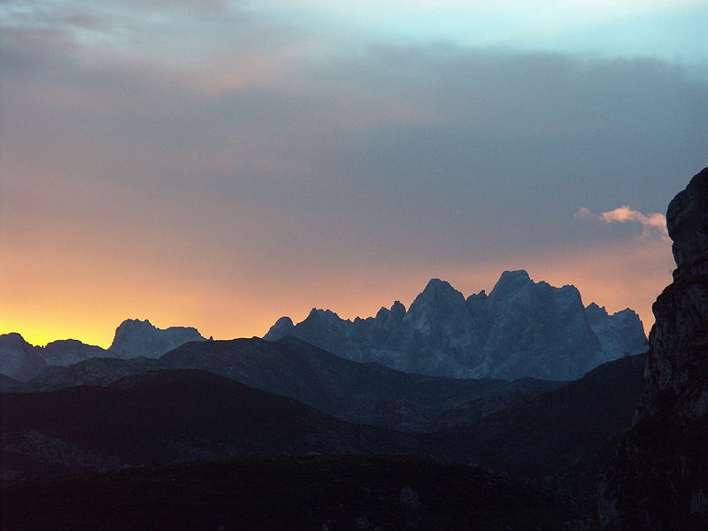

Los Picos de Europa son un macizo montañoso localizado en el norte de España que pertenece a la parte central de la cordillera Cantábrica. Aunque no muy extenso, su cercanía al mar hace que sea pródigo en accidentes geográficos de gran interés. En la actualidad el parque nacional de los Picos de Europa constituye el segundo parque nacional más visitado de España, después del parque nacional del Teide (Tenerife).
Esta formación caliza se extiende por Asturias, León y Cantabria, y en ella destacan sus alturas, en muchos casos por encima de los 2500 m s. n. m., por lo cerca que se encuentran del mar Cantábrico, pues en su punto más septentrional apenas distan 15 kilómetros del mar.